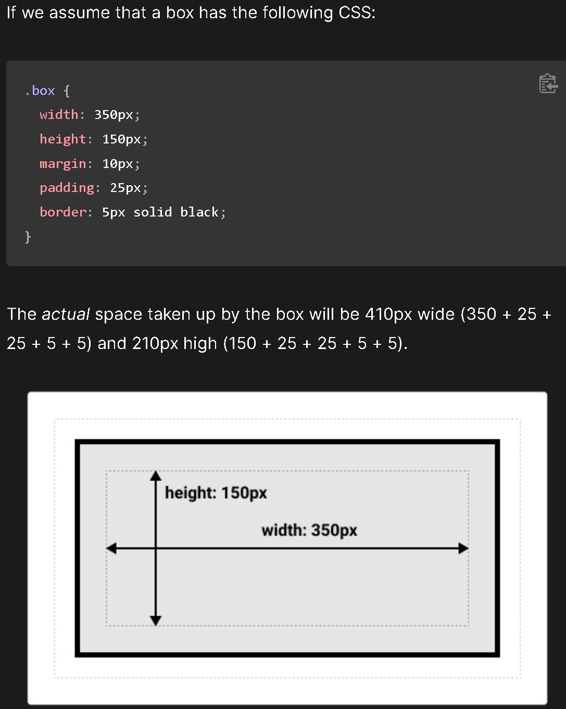
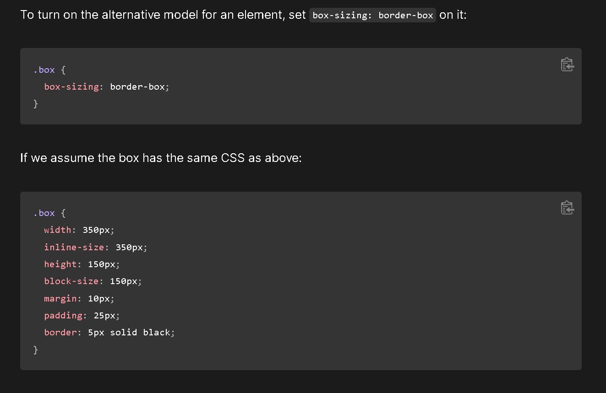
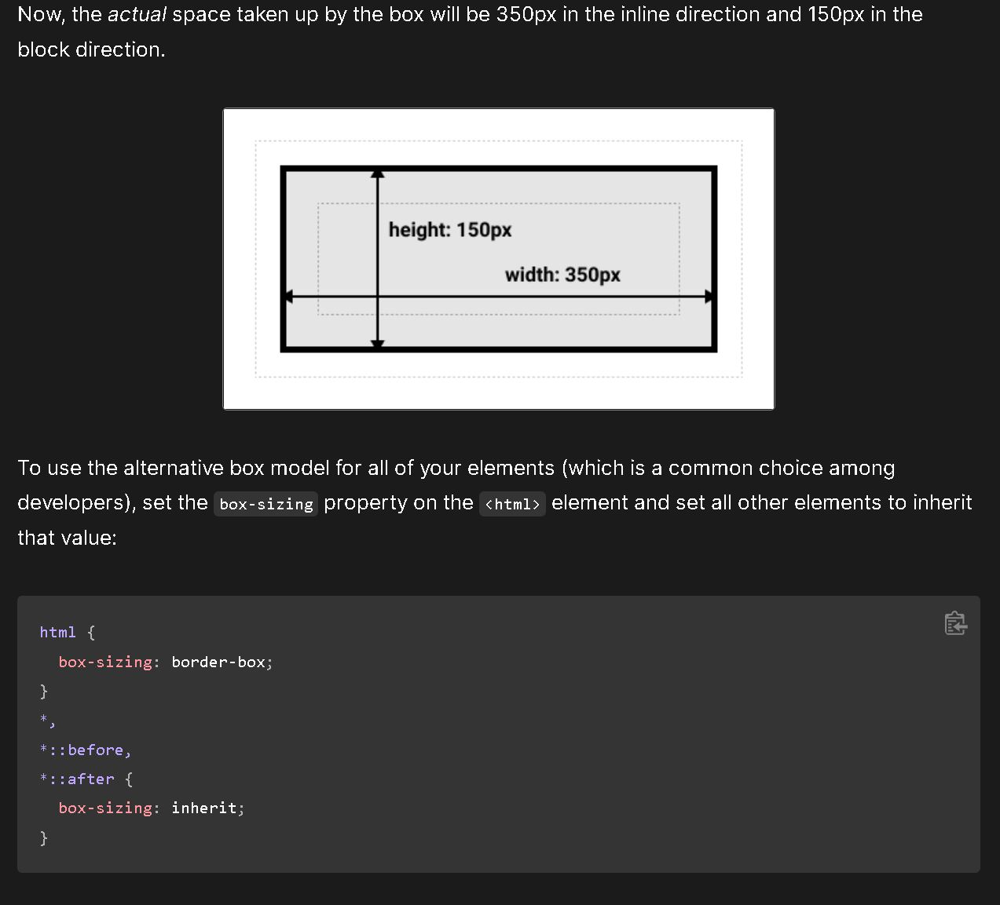

Q1.Padding to Border to Margin
Q2. The CSS box-sizing property allows us to include the padding and border in an element's total width and height.
Q3. In the standard box model, if you give a box an inline-size
and a block-size (or width and a height) attributes, this defines
the inline-size and block-size (width and heigh in horizontal languages)
of the content box. Any padding and border is then added to those dimensions
to get the total size taken up by the box.

In the alternative box model, any width is the width of the visible box on the page.
The content area width is that width minus the width for the padding and border.
No need to add up the border and padding to get the real size of the box.


Q4. It would depend on what situation I am in. I would use a margin to separate the block from things outside it. Then, use padding to move the contents away from the edges of the block.
Q5. I would use a padding in this situation becuase as mentioned above, use padding to move stuff away from the element to have more space between it and its border.
Q6. Use margin because by setting a negative margin on one side of your box can cause it to overlap other things on the page.